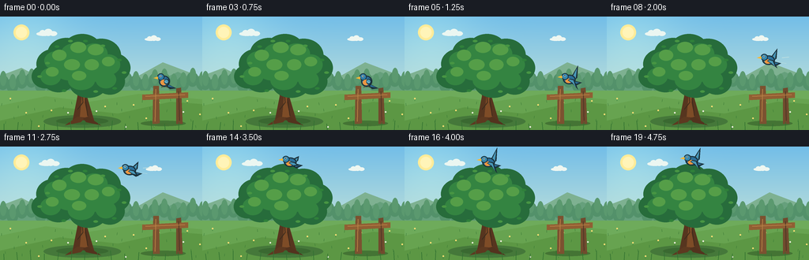
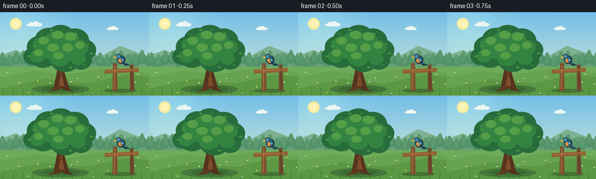
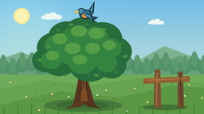

CODING AGENTS AS PIXEL WORLD MODELS
traex/GPT-5.6-Sol · dynamic_spatial_relationship_0049
点击播放 · 原生 RGB 像素
逐轮保存的候选
回放视频、检查图与代码变化。
每份候选均可单独播放。实际图片检查记录在下方工具轨迹中。
候选 01播放与检查图
点击播放 · 原生 RGB 像素


展开代码变化
--- 上一保存版本
+++ 本次保存版本
@@ -0,0 +1,210 @@
+from pathlib import Path
+import math
+import numpy as np
+from PIL import Image, ImageDraw, ImageFilter
+import artifact_io
+
+W, H, N, SCALE = 256, 144, 20, 4
+SW, SH = W*SCALE, H*SCALE
+
+def sc(v): return int(round(v*SCALE))
+def pts(seq): return [(sc(x),sc(y)) for x,y in seq]
+
+def ellipse(d, box, fill, outline=None, width=1):
+ d.ellipse(tuple(sc(v) for v in box), fill=fill, outline=outline, width=sc(width) if outline else 1)
+def polygon(d, seq, fill): d.polygon(pts(seq), fill=fill)
+def line(d, seq, fill, width=1): d.line(pts(seq), fill=fill, width=sc(width), joint='curve')
+
+def gradient_background(frame):
+ y = np.linspace(0,1,SH)[:,None,None]
+ top=np.array([115,190,232],float); bot=np.array([224,239,211],float)
+ arr=(top*(1-y)+bot*y)
+ arr=np.repeat(arr,SW,axis=1)
+ # warm atmospheric glow on upper left
+ yy,xx=np.mgrid[0:SH,0:SW]
+ glow=np.exp(-((xx-sc(34))**2+(yy-sc(22))**2)/(2*sc(42)**2))[...,None]
+ arr=np.clip(arr+glow*np.array([20,16,4]),0,255).astype(np.uint8)
+ return Image.fromarray(arr,'RGB')
+
+def draw_cloud(d,x,y,s,alpha_col=(245,250,244)):
+ c=alpha_col
+ ellipse(d,(x,y+3*s,x+25*s,y+10*s),c)
+ ellipse(d,(x+5*s,y,x+16*s,y+10*s),c)
+ ellipse(d,(x+13*s,y-2*s,x+27*s,y+10*s),c)
+ ellipse(d,(x+22*s,y+2*s,x+35*s,y+10*s),c)
+
+def draw_background(im,d,f):
+ # sun and distant clouds
+ ellipse(d,(17,10,37,30),(255,236,153))
+ ellipse(d,(20,13,34,27),(255,244,184))
+ drift=f*.28
+ draw_cloud(d,46+drift,17,0.75,(235,246,241))
+ draw_cloud(d,183+drift*.5,25,0.58,(239,247,241))
+ # distant hills
+ polygon(d,[(0,97),(0,75),(27,65),(52,78),(78,60),(110,78),(143,62),(170,78),(206,58),(256,77),(256,103)],(126,177,145))
+ polygon(d,[(0,101),(0,85),(32,76),(64,90),(96,73),(127,90),(160,74),(192,86),(225,70),(256,84),(256,105)],(102,160,124))
+ # distant tree dots
+ for i,x in enumerate(range(3,256,12)):
+ yy=86+4*math.sin(i*1.8)
+ ellipse(d,(x-7,yy-12,x+8,yy+7),(83,145,106))
+ ellipse(d,(x-3,yy-17,x+5,yy+2),(91,153,111))
+ # meadow
+ d.rectangle((0,sc(94),SW,SH),fill=(110,171,91))
+ # soft stripes in meadow
+ polygon(d,[(0,113),(58,101),(113,108),(176,98),(256,105),(256,144),(0,144)],(103,163,80))
+ polygon(d,[(0,132),(76,115),(149,123),(216,108),(256,111),(256,144),(0,144)],(92,151,68))
+ # tiny flowers / grass
+ for i in range(46):
+ x=(i*47+13)%256; y=104+((i*29)%37)
+ sway=math.sin(f*.42+i)*.5
+ line(d,[(x,y+3),(x+sway,y)],(57,120,54),.45)
+ if i%4==0:
+ ellipse(d,(x-1,y-1,x+1,y+1),(245,222,116))
+ elif i%7==0:
+ ellipse(d,(x-1,y-1,x+1,y+1),(239,239,224))
+
+def draw_tree(d,f):
+ # grounded shadow
+ ellipse(d,(55,125,153,141),(69,120,58))
+ ellipse(d,(71,128,137,137),(58,105,49))
+ # trunk silhouette and branching, slight asymmetry
+ polygon(d,[(92,131),(98,101),(96,80),(102,58),(111,57),(113,79),(109,98),(119,132)],(87,53,31))
+ polygon(d,[(99,95),(78,73),(81,68),(104,84),(107,93)],(91,55,31))
+ polygon(d,[(106,84),(127,62),(132,64),(112,93)],(79,49,29))
+ polygon(d,[(103,73),(94,51),(99,48),(109,77)],(95,57,31))
+ # bark light and grooves
+ polygon(d,[(101,128),(104,96),(103,75),(107,62),(110,81),(107,109),(112,132)],(126,76,39))
+ line(d,[(98,118),(105,109),(104,95)],(62,44,29),1)
+ line(d,[(111,126),(108,105),(111,91)],(61,42,27),1)
+ line(d,[(102,83),(86,71)],(61,42,27),.8)
+ # canopy clustered silhouette, gently animated edge leaves
+ sway=math.sin(f*.38)*.7
+ clusters=[(68,60,22,19),(84,47,24,20),(104,43,25,21),(128,49,25,21),(142,65,23,19),
+ (120,68,26,22),(94,67,29,24),(74,76,22,20),(112,83,25,20),(139,82,19,17),(57,76,17,15)]
+ for j,(x,y,rx,ry) in enumerate(clusters):
+ ox=sway*(.25+(j%3)*.18)
+ ellipse(d,(x-rx+ox,y-ry,x+rx+ox,y+ry),(39,108,59))
+ # midtone leaf bunches
+ mids=[(71,56,15,12),(94,47,17,13),(119,47,17,13),(137,61,15,13),(88,67,19,14),(116,68,19,15),(64,76,13,11),(103,81,17,12),(134,80,13,11)]
+ for j,(x,y,rx,ry) in enumerate(mids):
+ ox=sway*(.5 if j%2 else .2)
+ ellipse(d,(x-rx+ox,y-ry,x+rx+ox,y+ry),(52,132,65))
+ # sunlit foliage patches
+ lights=[(75,49,9,7),(99,39,10,7),(121,42,10,7),(137,57,8,6),(91,61,10,7),(116,61,9,7),(66,70,8,6),(100,75,9,6)]
+ for j,(x,y,rx,ry) in enumerate(lights):
+ ellipse(d,(x-rx+sway*.2,y-ry,x+rx+sway*.2,y+ry),(85,158,72))
+ # individual leaf flickers around perimeter
+ leafs=[(60,59,-15),(72,38,15),(89,31,-10),(108,31,12),(130,37,-18),(151,55,20),(157,71,-12),(145,91,14),(121,95,-12),(81,94,15),(50,76,-15)]
+ for j,(x,y,ang) in enumerate(leafs):
+ dx=sway*(j%2*.5+.2)
+ ellipse(d,(x-3+dx,y-1.5,x+3+dx,y+1.5),(47 if j%2 else 71,128 if j%2 else 149,58 if j%2 else 67))
+ # roots foreground
+ polygon(d,[(98,127),(82,138),(102,134),(108,128)],(93,57,32))
+ polygon(d,[(111,127),(128,138),(109,134),(105,129)],(83,51,30))
+
+def draw_fence(d):
+ # small rustic perch at far right, clearly separated from tree
+ # shadow
+ ellipse(d,(178,132,235,139),(68,116,52))
+ polygon(d,[(194,88),(201,88),(202,136),(193,136)],(123,82,48))
+ polygon(d,[(223,91),(229,90),(231,136),(223,136)],(112,75,45))
+ polygon(d,[(180,99),(238,96),(238,103),(180,106)],(144,95,51))
+ line(d,[(197,92),(196,133)],(181,125,68),1)
+ line(d,[(226,95),(227,132)],(78,55,39),1)
+ line(d,[(184,101),(234,99)],(188,132,73),1)
+
+def bird_position(f):
+ # hold visibly at the tree's right, then a clean rising arc, then hover above tree
+ if f <= 4:
+ return 207.0, 81.0, 0.0, True
+ if f <= 15:
+ u=(f-4)/11.0
+ e=u*u*(3-2*u)
+ # quadratic Bezier from right perch to above crown with a small outward lift
+ p0=np.array([207.,81.]); p1=np.array([221.,31.]); p2=np.array([105.,18.])
+ p=(1-e)**2*p0+2*(1-e)*e*p1+e*e*p2
+ return float(p[0]),float(p[1]),u,False
+ # remain unambiguously above the tree, subtle aerial bob
+ return 105.0+(f-15)*.35, 18.0+math.sin((f-15)*1.2)*1.1, 1.0, False
+
+def draw_bird_shadow(d,x,y,flight):
+ # subtle cast shadow, reinforces depth without adding another object
+ if not flight:
+ ellipse(d,(x-8,135,x+8,138),(68,113,51))
+
+def draw_bird(d,x,y,f,perched):
+ # bird points left. High contrast navy outline + blue back + warm breast.
+ outline=(27,48,57); blue=(43,111,153); blue2=(73,151,184); breast=(236,151,67)
+ if perched:
+ # tail behind body
+ polygon(d,[(x+6,y+5),(x+16,y+10),(x+8,y+11),(x+2,y+6)],outline)
+ polygon(d,[(x+5,y+5),(x+13,y+9),(x+6,y+8)],blue)
+ # body and head
+ ellipse(d,(x-6,y-6,x+8,y+8),outline)
+ ellipse(d,(x-4.8,y-4.8,x+6.5,y+6.6),blue)
+ ellipse(d,(x-8,y-9,x+1,y),outline)
+ ellipse(d,(x-7,y-8,x,y-1),(48,124,166))
+ # breast
+ ellipse(d,(x-4,y-1,x+4,y+6),breast)
+ # folded wing
+ ellipse(d,(x+0.5,y-2,x+7,y+5),outline)
+ ellipse(d,(x+1,y-1,x+5.8,y+3.8),blue2)
+ line(d,[(x+1,y+1),(x+5,y+3)],(210,230,217),.6)
+ # beak and eye
+ polygon(d,[(x-7.5,y-5),(x-13,y-3),(x-7,y-1.5)],(244,183,57))
+ ellipse(d,(x-4.7,y-6.4,x-2.5,y-4.2),(247,247,231))
+ ellipse(d,(x-4.1,y-5.9,x-3.0,y-4.8),(16,24,27))
+ # feet gripping post
+ line(d,[(x-1,y+6),(x-1,89),(x-3,90)],(88,58,37),.8)
+ line(d,[(x+3,y+6),(x+3,89),(x+5,90)],(88,58,37),.8)
+ else:
+ phase=math.sin((f-4)*math.pi*.72)
+ # tail, body then animated wings
+ polygon(d,[(x+5,y+2),(x+17,y+5),(x+9,y+9),(x+2,y+5)],outline)
+ polygon(d,[(x+5,y+3),(x+14,y+5),(x+8,y+7)],blue)
+ # far wing first: flap strongly for readable flying action
+ lift=7.5*phase
+ polygon(d,[(x+2,y),(x+4,y-3),(x+12,y-11-lift),(x+11,y-1),(x+6,y+3)],outline)
+ polygon(d,[(x+3,y),(x+5,y-2),(x+10.5,y-8-lift*.8),(x+9,y),(x+6,y+2)],blue2)
+ # body
+ ellipse(d,(x-7,y-5,x+9,y+7),outline)
+ ellipse(d,(x-5.5,y-3.7,x+7.5,y+5.7),blue)
+ ellipse(d,(x-4,y,x+4,y+5.5),breast)
+ # near wing swings opposite-ish, broad silhouette
+ down=6.2*phase
+ polygon(d,[(x+2,y),(x+7,y+1),(x+12,y+9+down),(x+5,y+6),(x-1,y+2)],outline)
+ polygon(d,[(x+2,y+1),(x+6,y+2),(x+9,y+7+down*.75),(x+5,y+5),(x,y+2)],blue2)
+ # head and beak
+ ellipse(d,(x-9,y-7,x,y+1.5),outline)
+ ellipse(d,(x-8,y-6,x-1,y+.5),(55,135,172))
+ polygon(d,[(x-8.5,y-4),(x-14,y-2),(x-8,y-.5)],(247,183,54))
+ ellipse(d,(x-5.9,y-4.8,x-3.8,y-2.7),(245,248,235))
+ ellipse(d,(x-5.4,y-4.35,x-4.3,y-3.25),(13,23,27))
+ # short speed accents only during central flight, behind direction of travel
+ if 7 <= f <= 12:
+ a=max(0.3,1-abs(f-9.5)/4)
+ col=(210,231,224)
+ line(d,[(x+18,y-2),(x+25+3*a,y-3)],col,.65)
+ line(d,[(x+17,y+4),(x+22+2*a,y+5)],col,.55)
+
+def render(f):
+ im=gradient_background(f)
+ d=ImageDraw.Draw(im)
+ draw_background(im,d,f)
+ draw_tree(d,f)
+ draw_fence(d)
+ x,y,u,perched=bird_position(f)
+ draw_bird_shadow(d,x,y,not perched)
+ draw_bird(d,x,y,f,perched)
+ # sparse foreground blades add depth
+ for j,xg in enumerate(range(5,256,17)):
+ bend=math.sin(f*.3+j)*1.2
+ line(d,[(xg,144),(xg+bend,136-(j%3)*2)],(48,112,48),.7)
+ return np.asarray(im.resize((W,H),Image.Resampling.LANCZOS),dtype=np.uint8)
+
+def main():
+ frames=np.stack([render(i) for i in range(N)],axis=0)
+ artifact_io.save(frames,Path(__file__).resolve().parent)
+ print('saved',frames.shape,frames.dtype,'range',frames.min(),frames.max())
+
+if __name__=='__main__': main()
可观测工具轨迹
实际执行的命令与返回图片。
命令 1exit 0
/bin/bash -lc "cat prompt.txt && printf '\\n---RULES---\\n' && cat GENERATION_RULES.md && printf '\\n---SPEC---\\n' && cat task_spec.json"
命令 2exit 0
/bin/bash -lc "find . -maxdepth 2 -type f -printf '%p\\n' | sort"
命令 3exit 0
/bin/bash -lc "sed -n '1,240p' artifact_io.py"
命令 4exit 0
/bin/bash -lc "cat > generate.py <<'PY'
from pathlib import Path
import math
import numpy as np
from PIL import Image, ImageDraw, ImageFilter
import artifact_io
W, H, N, SCALE = 256, 144, 20, 4
SW, SH = W*SCALE, H*SCALE
def sc(v): return int(round(v*SCALE))
def pts(seq): return [(sc(x),sc(y)) for x,y in seq]
def ellipse(d, box, fill, outline=None, width=1):
d.ellipse(tuple(sc(v) for v in box), fill=fill, outline=outline, width=sc(width) if outline else 1)
def polygon(d, seq, fill): d.polygon(pts(seq), fill=fill)
def line(d, seq, fill, width=1): d.line(pts(seq), fill=fill, width=sc(width), joint='curve')
def gradient_background(frame):
y = np.linspace(0,1,SH)[:,None,None]
top=np.array([115,190,232],float); bot=np.array([224,239,211],float)
arr=(top*(1-y)+bot*y)
arr=np.repeat(arr,SW,axis=1)
# warm atmospheric glow on upper left
yy,xx=np.mgrid[0:SH,0:SW]
glow=np.exp(-((xx-sc(34))**2+(yy-sc(22))**2)/(2*sc(42)**2))[...,None]
arr=np.clip(arr+glow*np.array([20,16,4]),0,255).astype(np.uint8)
return Image.fromarray(arr,'RGB')
def draw_cloud(d,x,y,s,alpha_col=(245,250,244)):
c=alpha_col
ellipse(d,(x,y+3*s,x+25*s,y+10*s),c)
ellipse(d,(x+5*s,y,x+16*s,y+10*s),c)
ellipse(d,(x+13*s,y-2*s,x+27*s,y+10*s),c)
ellipse(d,(x+22*s,y+2*s,x+35*s,y+10*s),c)
def draw_background(im,d,f):
# sun and distant clouds
ellipse(d,(17,10,37,30),(255,236,153))
ellipse(d,(20,13,34,27),(255,244,184))
drift=f*.28
draw_cloud(d,46+drift,17,0.75,(235,246,241))
draw_cloud(d,183+drift*.5,25,0.58,(239,247,241))
# distant hills
polygon(d,[(0,97),(0,75),(27,65),(52,78),(78,60),(110,78),(143,62),(170,78),(206,58),(256,77),(256,103)],(126,177,145))
polygon(d,[(0,101),(0,85),(32,76),(64,90),(96,73),(127,90),(160,74),(192,86),(225,70),(256,84),(256,105)],(102,160,124))
# distant tree dots
for i,x in enumerate(range(3,256,12)):
yy=86+4*math.sin(i*1.8)
ellipse(d,(x-7,yy-12,x+8,yy+7),(83,145,106))
ellipse(d,(x-3,yy-17,x+5,yy+2),(91,153,111))
# meadow
d.rectangle((0,sc(94),SW,SH),fill=(110,171,91))
# soft stripes in meadow
polygon(d,[(0,113),(58,101),(113,108),(176,98),(256,105),(256,144),(0,144)],(103,163,80))
polygon(d,[(0,132),(76,115),(149,123),(216,108),(256,111),(256,144),(0,144)],(92,151,68))
# tiny flowers / grass
for i in range(46):
x=(i*47+13)%256; y=104+((i*29)%37)
sway=math.sin(f*.42+i)*.5
line(d,[(x,y+3),(x+sway,y)],(57,120,54),.45)
if i%4==0:
ellipse(d,(x-1,y-1,x+1,y+1),(245,222,116))
elif i%7==0:
ellipse(d,(x-1,y-1,x+1,y+1),(239,239,224))
def draw_tree(d,f):
# grounded shadow
ellipse(d,(55,125,153,141),(69,120,58))
ellipse(d,(71,128,137,137),(58,105,49))
# trunk silhouette and branching, slight asymmetry
polygon(d,[(92,131),(98,101),(96,80),(102,58),(111,57),(113,79),(109,98),(119,132)],(87,53,31))
polygon(d,[(99,95),(78,73),(81,68),(104,84),(107,93)],(91,55,31))
polygon(d,[(106,84),(127,62),(132,64),(112,93)],(79,49,29))
polygon(d,[(103,73),(94,51),(99,48),(109,77)],(95,57,31))
# bark light and grooves
polygon(d,[(101,128),(104,96),(103,75),(107,62),(110,81),(107,109),(112,132)],(126,76,39))
line(d,[(98,118),(105,109),(104,95)],(62,44,29),1)
line(d,[(111,126),(108,105),(111,91)],(61,42,27),1)
line(d,[(102,83),(86,71)],(61,42,27),.8)
# canopy clustered silhouette, gently animated edge leaves
sway=math.sin(f*.38)*.7
clusters=[(68,60,22,19),(84,47,24,20),(104,43,25,21),(128,49,25,21),(142,65,23,19),
(120,68,26,22),(94,67,29,24),(74,76,22,20),(112,83,25,20),(139,82,19,17),(57,76,17,15)]
for j,(x,y,rx,ry) in enumerate(clusters):
ox=sway*(.25+(j%3)*.18)
ellipse(d,(x-rx+ox,y-ry,x+rx+ox,y+ry),(39,108,59))
# midtone leaf bunches
mids=[(71,56,15,12),(94,47,17,13),(119,47,17,13),(137,61,15,13),(88,67,19,14),(116,68,19,15),(64,76,13,11),(103,81,17,12),(134,80,13,11)]
for j,(x,y,rx,ry) in enumerate(mids):
ox=sway*(.5 if j%2 else .2)
ellipse(d,(x-rx+ox,y-ry,x+rx+ox,y+ry),(52,132,65))
# sunlit foliage patches
lights=[(75,49,9,7),(99,39,10,7),(121,42,10,7),(137,57,8,6),(91,61,10,7),(116,61,9,7),(66,70,8,6),(100,75,9,6)]
for j,(x,y,rx,ry) in enumerate(lights):
ellipse(d,(x-rx+sway*.2,y-ry,x+rx+sway*.2,y+ry),(85,158,72))
# individual leaf flickers around perimeter
leafs=[(60,59,-15),(72,38,15),(89,31,-10),(108,31,12),(130,37,-18),(151,55,20),(157,71,-12),(145,91,14),(121,95,-12),(81,94,15),(50,76,-15)]
for j,(x,y,ang) in enumerate(leafs):
dx=sway*(j%2*.5+.2)
ellipse(d,(x-3+dx,y-1.5,x+3+dx,y+1.5),(47 if j%2 else 71,128 if j%2 else 149,58 if j%2 else 67))
# roots foreground
polygon(d,[(98,127),(82,138),(102,134),(108,128)],(93,57,32))
polygon(d,[(111,127),(128,138),(109,134),(105,129)],(83,51,30))
def draw_fence(d):
# small rustic perch at far right, clearly separated from tree
# shadow
ellipse(d,(178,132,235,139),(68,116,52))
polygon(d,[(194,88),(201,88),(202,136),(193,136)],(123,82,48))
polygon(d,[(223,91),(229,90),(231,136),(223,136)],(112,75,45))
polygon(d,[(180,99),(238,96),(238,103),(180,106)],(144,95,51))
line(d,[(197,92),(196,133)],(181,125,68),1)
line(d,[(226,95),(227,132)],(78,55,39),1)
line(d,[(184,101),(234,99)],(188,132,73),1)
def bird_position(f):
# hold visibly at the tree's right, then a clean rising arc, then hover above tree
if f <= 4:
return 207.0, 81.0, 0.0, True
if f <= 15:
u=(f-4)/11.0
e=u*u*(3-2*u)
# quadratic Bezier from right perch to above crown with a small outward lift
p0=np.array([207.,81.]); p1=np.array([221.,31.]); p2=np.array([105.,18.])
p=(1-e)**2*p0+2*(1-e)*e*p1+e*e*p2
return float(p[0]),float(p[1]),u,False
# remain unambiguously above the tree, subtle aerial bob
return 105.0+(f-15)*.35, 18.0+math.sin((f-15)*1.2)*1.1, 1.0, False
def draw_bird_shadow(d,x,y,flight):
# subtle cast shadow, reinforces depth without adding another object
if not flight:
ellipse(d,(x-8,135,x+8,138),(68,113,51))
def draw_bird(d,x,y,f,perched):
# bird points left. High contrast navy outline + blue back + warm breast.
outline=(27,48,57); blue=(43,111,153); blue2=(73,151,184); breast=(236,151,67)
if perched:
# tail behind body
polygon(d,[(x+6,y+5),(x+16,y+10),(x+8,y+11),(x+2,y+6)],outline)
polygon(d,[(x+5,y+5),(x+13,y+9),(x+6,y+8)],blue)
# body and head
ellipse(d,(x-6,y-6,x+8,y+8),outline)
ellipse(d,(x-4.8,y-4.8,x+6.5,y+6.6),blue)
ellipse(d,(x-8,y-9,x+1,y),outline)
ellipse(d,(x-7,y-8,x,y-1),(48,124,166))
# breast
ellipse(d,(x-4,y-1,x+4,y+6),breast)
# folded wing
ellipse(d,(x+0.5,y-2,x+7,y+5),outline)
ellipse(d,(x+1,y-1,x+5.8,y+3.8),blue2)
line(d,[(x+1,y+1),(x+5,y+3)],(210,230,217),.6)
# beak and eye
polygon(d,[(x-7.5,y-5),(x-13,y-3),(x-7,y-1.5)],(244,183,57))
ellipse(d,(x-4.7,y-6.4,x-2.5,y-4.2),(247,247,231))
ellipse(d,(x-4.1,y-5.9,x-3.0,y-4.8),(16,24,27))
# feet gripping post
line(d,[(x-1,y+6),(x-1,89),(x-3,90)],(88,58,37),.8)
line(d,[(x+3,y+6),(x+3,89),(x+5,90)],(88,58,37),.8)
else:
phase=math.sin((f-4)*math.pi*.72)
# tail, body then animated wings
polygon(d,[(x+5,y+2),(x+17,y+5),(x+9,y+9),(x+2,y+5)],outline)
polygon(d,[(x+5,y+3),(x+14,y+5),(x+8,y+7)],blue)
# far wing first: flap strongly for readable flying action
lift=7.5*phase
polygon(d,[(x+2,y),(x+4,y-3),(x+12,y-11-lift),(x+11,y-1),(x+6,y+3)],outline)
polygon(d,[(x+3,y),(x+5,y-2),(x+10.5,y-8-lift*.8),(x+9,y),(x+6,y+2)],blue2)
# body
ellipse(d,(x-7,y-5,x+9,y+7),outline)
ellipse(d,(x-5.5,y-3.7,x+7.5,y+5.7),blue)
ellipse(d,(x-4,y,x+4,y+5.5),breast)
# near wing swings opposite-ish, broad silhouette
down=6.2*phase
polygon(d,[(x+2,y),(x+7,y+1),(x+12,y+9+down),(x+5,y+6),(x-1,y+2)],outline)
polygon(d,[(x+2,y+1),(x+6,y+2),(x+9,y+7+down*.75),(x+5,y+5),(x,y+2)],blue2)
# head and beak
ellipse(d,(x-9,y-7,x,y+1.5),outline)
ellipse(d,(x-8,y-6,x-1,y+.5),(55,135,172))
polygon(d,[(x-8.5,y-4),(x-14,y-2),(x-8,y-.5)],(247,183,54))
ellipse(d,(x-5.9,y-4.8,x-3.8,y-2.7),(245,248,235))
ellipse(d,(x-5.4,y-4.35,x-4.3,y-3.25),(13,23,27))
# short speed accents only during central flight, behind direction of travel
if 7 <= f <= 12:
a=max(0.3,1-abs(f-9.5)/4)
col=(210,231,224)
line(d,[(x+18,y-2),(x+25+3*a,y-3)],col,.65)
line(d,[(x+17,y+4),(x+22+2*a,y+5)],col,.55)
def render(f):
im=gradient_background(f)
d=ImageDraw.Draw(im)
draw_background(im,d,f)
draw_tree(d,f)
draw_fence(d)
x,y,u,perched=bird_position(f)
draw_bird_shadow(d,x,y,not perched)
draw_bird(d,x,y,f,perched)
# sparse foreground blades add depth
for j,xg in enumerate(range(5,256,17)):
bend=math.sin(f*.3+j)*1.2
line(d,[(xg,144),(xg+bend,136-(j%3)*2)],(48,112,48),.7)
return np.asarray(im.resize((W,H),Image.Resampling.LANCZOS),dtype=np.uint8)
def main():
frames=np.stack([render(i) for i in range(N)],axis=0)
artifact_io.save(frames,Path(__file__).resolve().parent)
print('saved',frames.shape,frames.dtype,'range',frames.min(),frames.max())
if __name__=='__main__': main()
PY
python generate.py
python - <<'PY'
import numpy as np
from PIL import Image
z=np.load('pixels.npz')['pixels']
print('pixels',z.shape,z.dtype,'frames unique deltas', [np.count_nonzero(z[:,:,i]"'!=z[:,:,i-1]) for i in range(1,z.shape[2])])
PY'视觉工具实际返回图片 1

视觉工具实际返回图片 2
视觉工具实际返回图片 3
视觉工具实际返回图片 4

保存候选 1 份；完成命令 4 次；可验证图片返回 4 张。原始 API 响应与完整日志保留在本地。